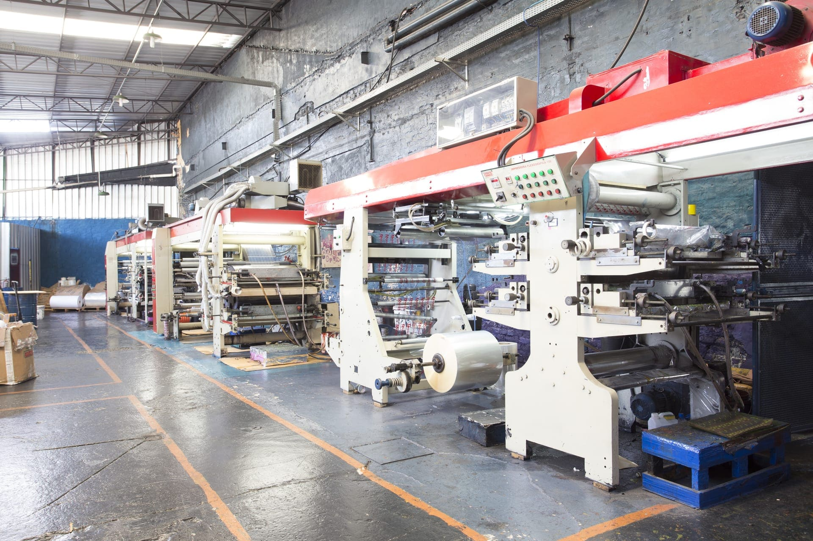

Missão
Fabricar e fornecer fitas adesivas com atendimento direto, entregando fitas confiáveis para embalagem, sinalização, isolamento e construção em todo o Brasil.

A FIT-PEL nasceu em 1989, na Mooca, um dos bairros mais tradicionais de São Paulo. Uma história construída atendendo atacadistas, papelarias e bazares com a convicção de que fita adesiva boa se faz com produção própria, do controle da matéria-prima ao rolo acabado.
Em julho de 1997, a fábrica se estruturou no endereço que ocupa até hoje e consolidou um diferencial técnico que se tornou marca registrada: ser uma fita com mais de 20 g/m² de adesivo, feita com matéria-prima nacional.
De lá pra cá, o portfólio cresceu da fita transparente para uma linha completa com mais de 200 produtos: BOPP, kraft, crepe, hot-melt industrial (2016), silver tape e demarcação de solo (2024), duplas face especiais e fita isolante elétrica (2025), além das fitas personalizadas com impressão flexográfica.
Hoje, em uma fábrica de 8.000 m² na Mooca, com mais de 120 colaboradores, a empresa atende indústrias, distribuidores, e-commerces e construtoras em todo o território nacional, produzindo mais de 10 milhões de metros quadrados por mês.

Ouça um breve resumo em áudio sobre a história da empresa:
Fabricar e fornecer fitas adesivas com atendimento direto, entregando fitas confiáveis para embalagem, sinalização, isolamento e construção em todo o Brasil.
Ser referência nacional em fitas adesivas fabricadas no Brasil, reconhecida pela qualidade consistente, agilidade de entrega e proximidade com o cliente.
A FIT-PEL é signatária do programa Empresa Amiga da Criança, da Fundação Abrinq — comprometida com o combate ao trabalho infantil, o apoio ao desenvolvimento profissional de jovens e iniciativas sociais voltadas a crianças e adolescentes.